Four fixed scene fixtures at 1280 px desktop and 390 px phone. These are actual app captures using the same merchant catalogue dimensions and initial camera bookmarks. Phone CPU is throttled 4× in Chromium; it still uses the laptop GPU, not a physical phone GPU.
Frame rates count completed ThreeStage render calls during a 10-second continuous pointer orbit. Idle animation callbacks are not counted. “3D activation” starts at the 3D House control; the separate navigation measurement includes the initial 2D application boot. A sub-three-second activation does not establish a sub-three-second cold direct-demo load.
natural-depth · GPU ANGLE (Intel, Intel(R) Iris(R) Xe Graphics (0x0000A7A1) Direct3D11 vs_5_0 ps_5_0, D3D11) Page navigation → first 3D frame 4.89 s
after · 56.7 rendered FPS · 3D activation 1.38 s
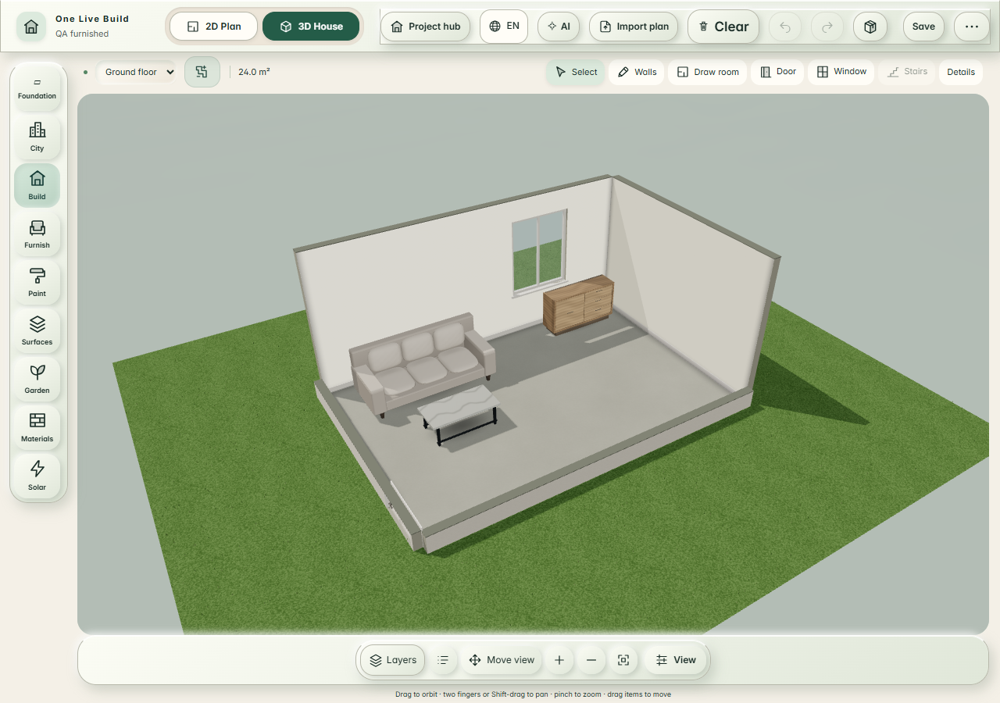
natural-basic · GPU ANGLE (Intel, Intel(R) Iris(R) Xe Graphics (0x0000A7A1) Direct3D11 vs_5_0 ps_5_0, D3D11) Page navigation → first 3D frame 10.51 s
Fixed camera matches · saved geometry unchanged · 60 FPS target NOT MET · 3D-activation 3 s target met in this run · cold navigation 3 s target NOT MET
furnished-room · phone 390 px
before · 46.5 rendered FPS · 3D activation 2.27 s
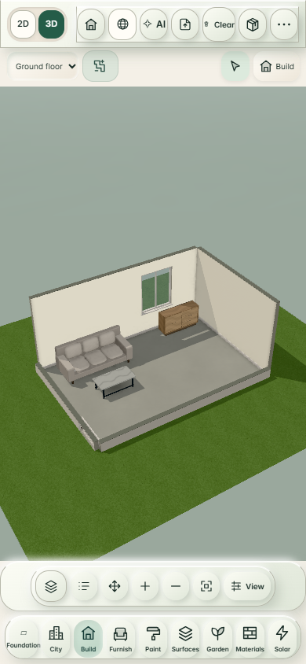
natural-depth · GPU ANGLE (Intel, Intel(R) Iris(R) Xe Graphics (0x0000A7A1) Direct3D11 vs_5_0 ps_5_0, D3D11) Page navigation → first 3D frame 6.92 s
after · 55.2 rendered FPS · 3D activation 2.80 s
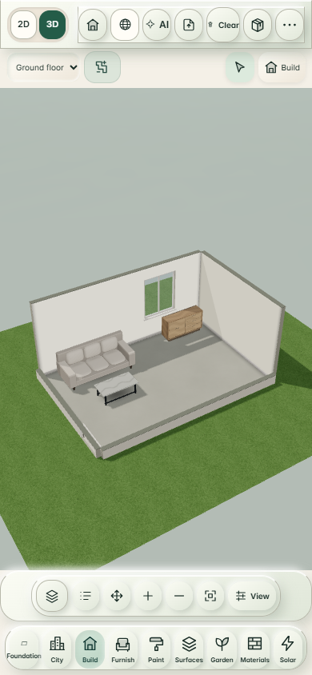
natural-basic · GPU ANGLE (Intel, Intel(R) Iris(R) Xe Graphics (0x0000A7A1) Direct3D11 vs_5_0 ps_5_0, D3D11) Page navigation → first 3D frame 8.46 s
Fixed camera matches · saved geometry unchanged · 30 FPS target met in this run · 3D-activation 3 s target met in this run · cold navigation 3 s target NOT MET
kitchen-dining · desktop 1280 px
before · 34.8 rendered FPS · 3D activation 1.48 s
natural-depth · GPU ANGLE (Intel, Intel(R) Iris(R) Xe Graphics (0x0000A7A1) Direct3D11 vs_5_0 ps_5_0, D3D11) Page navigation → first 3D frame 5.96 s
after · 59.2 rendered FPS · 3D activation 1.16 s
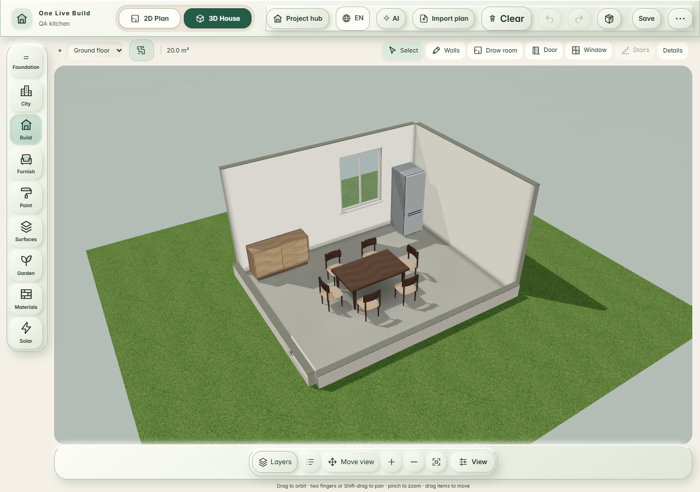
natural-basic · GPU ANGLE (Intel, Intel(R) Iris(R) Xe Graphics (0x0000A7A1) Direct3D11 vs_5_0 ps_5_0, D3D11) Page navigation → first 3D frame 4.02 s
Fixed camera matches · saved geometry unchanged · 60 FPS target NOT MET · 3D-activation 3 s target met in this run · cold navigation 3 s target NOT MET
kitchen-dining · phone 390 px
before · 35.6 rendered FPS · 3D activation 6.96 s
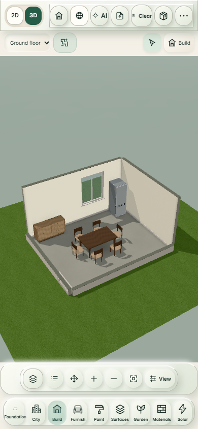
natural-depth · GPU ANGLE (Intel, Intel(R) Iris(R) Xe Graphics (0x0000A7A1) Direct3D11 vs_5_0 ps_5_0, D3D11) Page navigation → first 3D frame 9.99 s
after · 59.3 rendered FPS · 3D activation 2.41 s
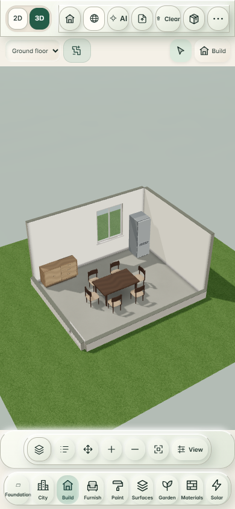
natural-basic · GPU ANGLE (Intel, Intel(R) Iris(R) Xe Graphics (0x0000A7A1) Direct3D11 vs_5_0 ps_5_0, D3D11) Page navigation → first 3D frame 6.82 s
Fixed camera matches · saved geometry unchanged · 30 FPS target met in this run · 3D-activation 3 s target met in this run · cold navigation 3 s target NOT MET
bathroom · desktop 1280 px
before · 36.4 rendered FPS · 3D activation 0.65 s
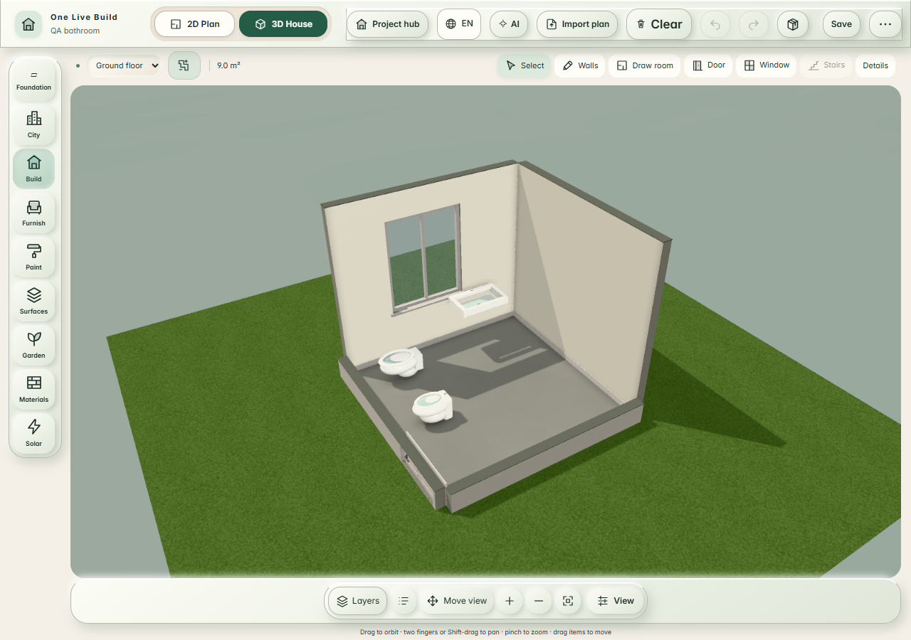
natural-depth · GPU ANGLE (Intel, Intel(R) Iris(R) Xe Graphics (0x0000A7A1) Direct3D11 vs_5_0 ps_5_0, D3D11) Page navigation → first 3D frame 4.23 s
after · 58.4 rendered FPS · 3D activation 0.44 s
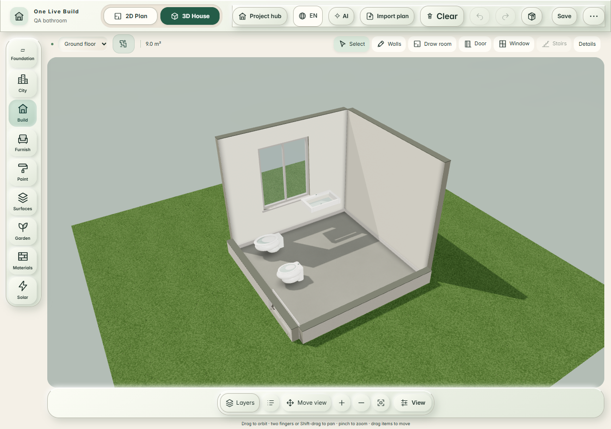
natural-basic · GPU ANGLE (Intel, Intel(R) Iris(R) Xe Graphics (0x0000A7A1) Direct3D11 vs_5_0 ps_5_0, D3D11) Page navigation → first 3D frame 2.14 s
Fixed camera matches · saved geometry unchanged · 60 FPS target NOT MET · 3D-activation 3 s target met in this run · cold navigation 3 s target met in this run
bathroom · phone 390 px
before · 34.1 rendered FPS · 3D activation 2.68 s
natural-depth · GPU ANGLE (Intel, Intel(R) Iris(R) Xe Graphics (0x0000A7A1) Direct3D11 vs_5_0 ps_5_0, D3D11) Page navigation → first 3D frame 9.63 s
after · 58.7 rendered FPS · 3D activation 2.69 s
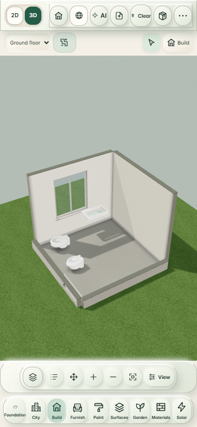
natural-basic · GPU ANGLE (Intel, Intel(R) Iris(R) Xe Graphics (0x0000A7A1) Direct3D11 vs_5_0 ps_5_0, D3D11) Page navigation → first 3D frame 7.43 s
Fixed camera matches · saved geometry unchanged · 30 FPS target met in this run · 3D-activation 3 s target met in this run · cold navigation 3 s target NOT MET
outside · desktop 1280 px
before · 32.3 rendered FPS · 3D activation 1.65 s
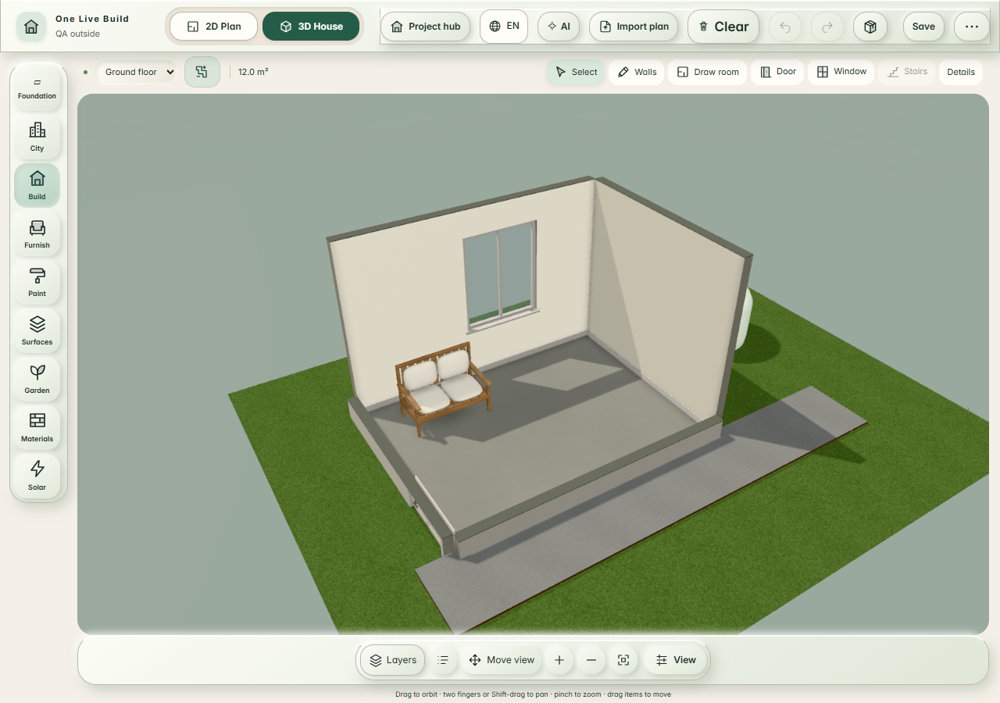
natural-depth · GPU ANGLE (Intel, Intel(R) Iris(R) Xe Graphics (0x0000A7A1) Direct3D11 vs_5_0 ps_5_0, D3D11) Page navigation → first 3D frame 6.23 s
after · 59.9 rendered FPS · 3D activation 0.46 s
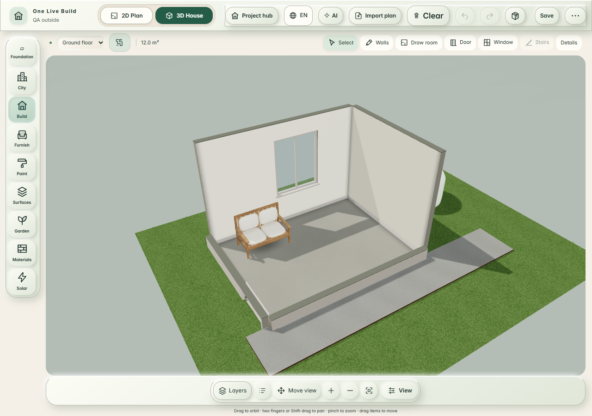
natural-basic · GPU ANGLE (Intel, Intel(R) Iris(R) Xe Graphics (0x0000A7A1) Direct3D11 vs_5_0 ps_5_0, D3D11) Page navigation → first 3D frame 3.01 s
Fixed camera matches · saved geometry unchanged · 60 FPS target NOT MET · 3D-activation 3 s target met in this run · cold navigation 3 s target NOT MET
outside · phone 390 px
before · 31.4 rendered FPS · 3D activation 3.59 s
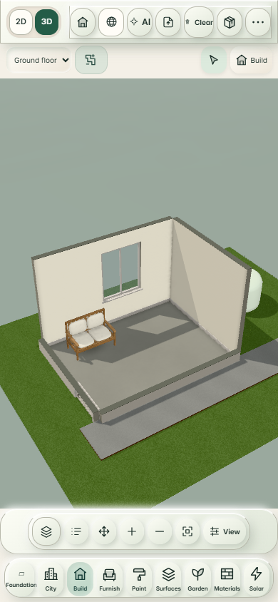
natural-depth · GPU ANGLE (Intel, Intel(R) Iris(R) Xe Graphics (0x0000A7A1) Direct3D11 vs_5_0 ps_5_0, D3D11) Page navigation → first 3D frame 12.90 s
after · 56.5 rendered FPS · 3D activation 1.79 s
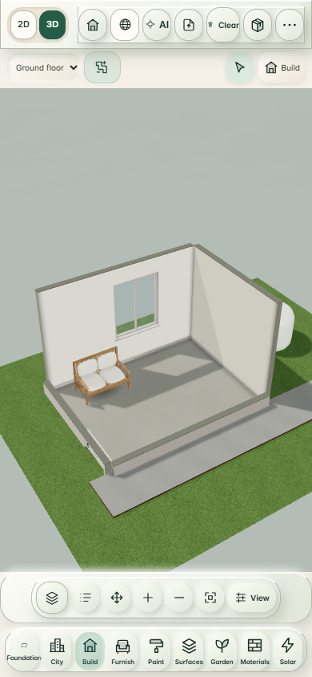
natural-basic · GPU ANGLE (Intel, Intel(R) Iris(R) Xe Graphics (0x0000A7A1) Direct3D11 vs_5_0 ps_5_0, D3D11) Page navigation → first 3D frame 7.35 s
Fixed camera matches · saved geometry unchanged · 30 FPS target met in this run · 3D-activation 3 s target met in this run · cold navigation 3 s target NOT MET